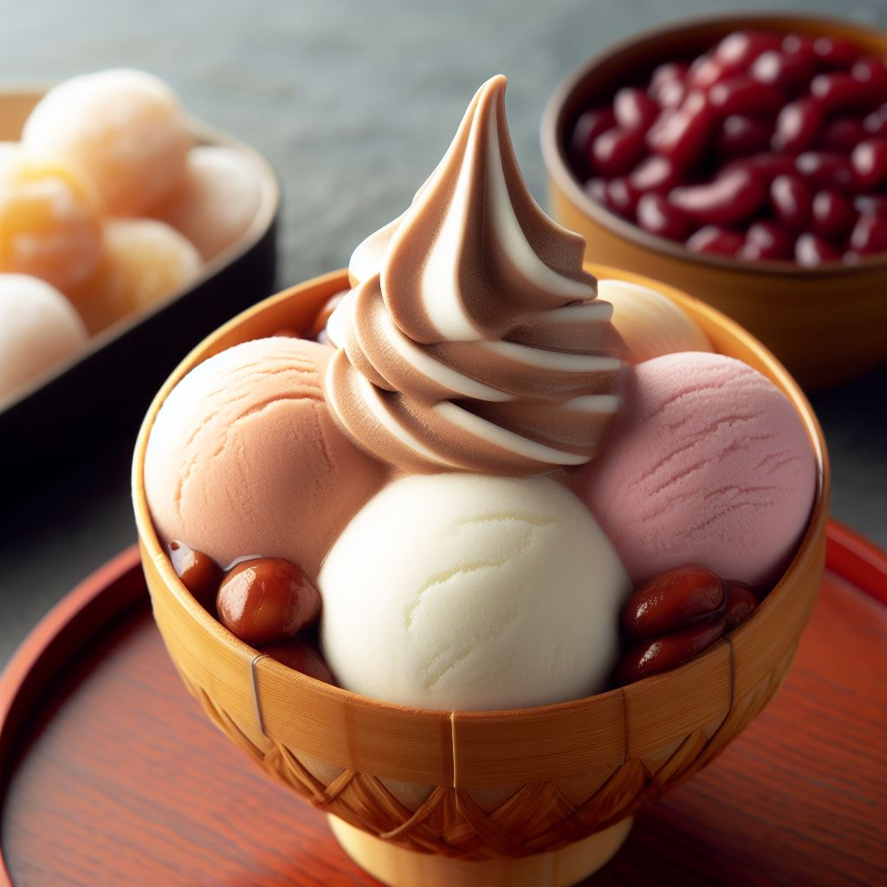
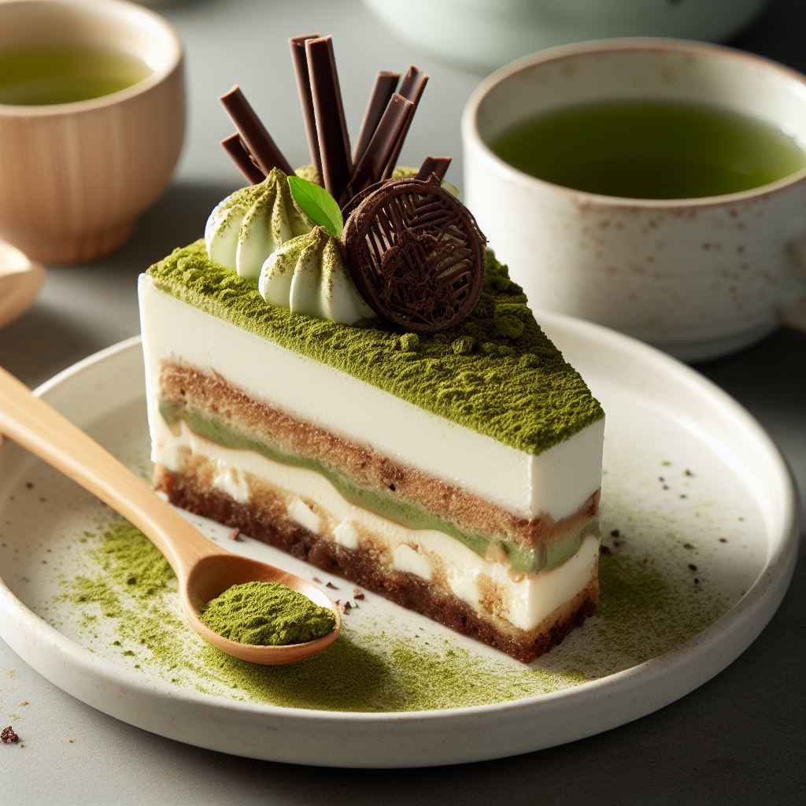

お品書き
デザート
- 黒蜜大福
もちもちの白玉餡に包まれた、ほんのり甘い黒蜜が特徴です。
白玉の食感が、口の中でとろけるような甘さと絶妙に組み合わさり、贅沢な一口が楽しめます。
- 和三盆アイスクリーム
和三盆糖のほんのりした甘さが特徴で、日本の美しい風景や文化を思い起こさせる一杯です。

贅沢な甘味を楽しむことができます。 - 抹茶ティラミス
濃厚なマスカルポーネチーズと抹茶の風味が、口の中で甘さと苦みの絶妙なダンスを繰り広げます。

抹茶愛好家やデザート好きにとっては、必ずや心躍る一皿でしょう。